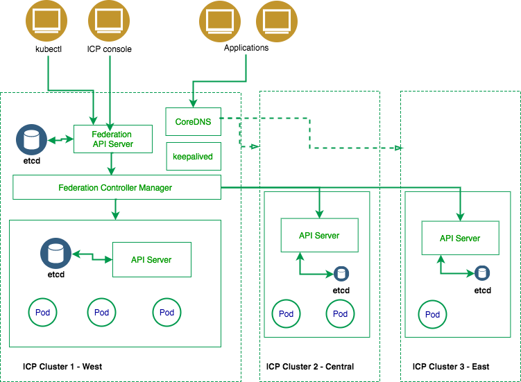
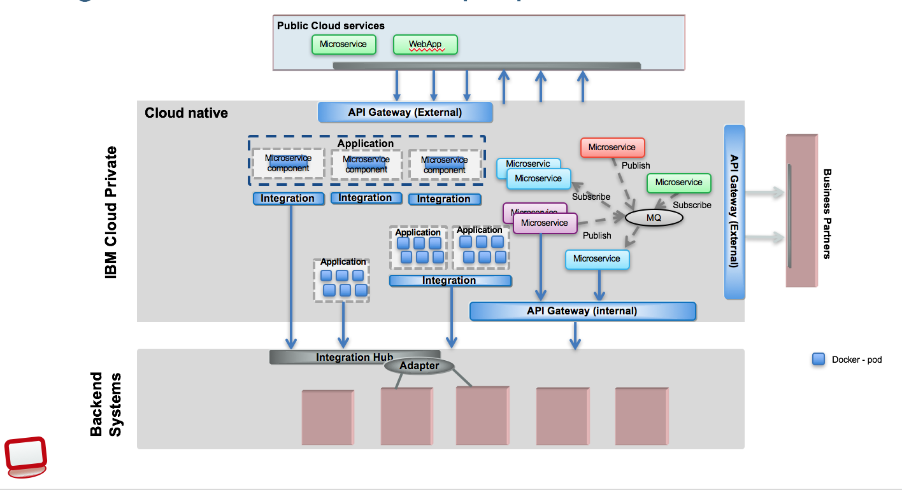

Journey to the cloud
This article aims to present how to adopt the cloud leveraging the existing materials develop by IBM Cloud Architecture and Solution engineering team.
Why Cloud?
The most important value points:
- Rapid deployment, scalability, ease of use, and elasticity to adapt to demand
- Predictable cost, optimized for workload demand
- Enable DevOps, increase developers productivity
Private cloud adds:
- Knowledge of where data resides
- Apply own enterprise own security and governance policies
- Simplify integration to on-premise business functions
IBM Public Cloud value proposition:
- Easy migration
- Adopt cloud native development and operations
- AI Ready
- Hybrid integration
- Secure: continuous security scanning for apps and data
- Easily integrate and manage all your data across vendors and clouds — on or off premises
Cloud is the technology for innovation and transformation. AI, blockchain, multi-cloud, SaaS integration, single page app are drivers for cloud adoption. The new application landscape integrate existing data centers, private cloud within corporate firewall and SaaS, Public cloud provider, IoT, traditional B2B...
The new landscape will be multi-cluster & multi-cloud.

IBM Cloud public offers a set of added value services to manage data, app development, devops, networking access, servers, security, AI, blockchain and more.... The IBM Cloud service catalog is continuously updated
IBM Private Cloud reference architecture
IBM Cloud Private brings cloud innovation within your datacenter. It is a Kubernetes platform with optimized scheduling, with most of the IBM Middleware products moving to it and it:
- supports better cluster management, security capabilities, image repositories, routing services, and microservices mesh
- authorizes infrastructure automation with scripts (Terraform, IBM Multi Cloud Manager)
- provides monitoring for container-based applications for logging, dashboards, and automation.
- supports network and storage policy-based controls for application isolation and security, and automated application health checking and recovery from failures

For product introduction see ICP Product page here.
With the ICP catalog you can install a lot of IBM middleware products and some open sources and your own helm charts in few seconds.

Challenges to solve
We recognize that not every organization is ready to move everything they have to a public cloud environment, and there are lots of reasons for that. IBM offers the richest range of deployment options – from Private to Public and Dedicated. Still, enterprises will face new challenges in broadening the adoption of Cloud to critical applications. We can group those challenges into different categories and we will address in next sections the best practices and other product informations we have developed for you:
- Application ARCHITECTURE and DEVELOPMENT practices:
- What does it mean to adopt Microservice pattern
- Lift and shift existing applications to cloud
- Refactoring existing applications
- Adopt polyglot with new Languages & runtimes
- Engage with APIs management and API standard
- DevOps, continuous delivery
- Application PORTABILITY
- Regulation and multi regions deployment
- Cloud provider availability
- Cost and quality of services
- INTEGRATION
- APIs definition & Management
- Integrating existing Applications and SOA services
- Support transactions
- Leverage and coexist with existing ESB
- Agility for new integration needs
- DATA MOVEMENT & GOVERNANCE
- New Analytics & AI Services
- Data Privacy & Risk
- Data Gravity & Performance
- Network Cost
- Data Gravity & Lock-in
- SERVICE MANAGEMENT
- Monitoring/SRE
- SLAs
- Problem Diagnosis
- HA/DR
- Scale
- Backup and restore
- SECURITY & COMPLIANCE
- Identity & Authorization
- Audit
- Shared Responsibility Models
- Regulatory Compliance
Operation lead (Todd), responsible for infrastructure management, security and environment availability and maintenance has different concerns than developer (Jane) who is responsible to develop new application but also maintain existing application.
A journey...
Architecture and Development
Microservice reference architecture
Microservices is an application architectural style in which an application is composed of many discrete, network-connected components
- Microservices in the world of integration
- Public cloud for dev and test Stock trader app to ICP and Public
- Blue compute on kubernetes: a microservice reference implementation

Innovate quickly with cloud native development
Leverage the following tutorials and articles
- Tutorial: Deploy a cloud-native application in Kubernetes
- Microservices with Kubernetes
- An Angular 6 SPA with nodejs bff full app
- Run the Springboot on a Kubernetes Cluster
- Making Microservices Resilient
- Use Microclimate to run an End-to-End DevOps environment on IBM Cloud Private
Refactoring app to microservices
Business wants to improve the application to increase client adoption and satisfaction. Monolithic applications are more difficult to change and moving to microservice architecture will bring velocity to the development team.
- Refactoring application code to microservices, this article addresses the why and how to refactor an existing Java application to microservice architecture. They also cover data model refactoring
- The process to start from an existing JEE to split into microservices is documented in this repository. 10-15% of existing WebSphere workloads can be moved as-is to cloud.
- WebSphere on the Cloud: Application Modernization
Polyglot applications
Use one the available boiler plates, starting code from IBM Cloud like Nodejs, Java, Python, GoLang, Swift... and deploy them on ICP or IBM Container services. Below is a list of how to guides for Java and nodejs app but also decision and event streaming:
- Develop a SOAP Jaxws app deployed in OpenLiberty and docker
- Apply a test driven development for Angular 6 app with nodejs-expressjs BFF service
- Event messaging with Apache Kafka in kubernetes
- Develop a REST API with JAXRS
- How to develop a REST API which integrates with a SOAP backend
- Implement decisions with Operational Decision Management and deploy ODM on ICP
Lift and shift
A need to shift from IaaS (VM, network, storage, security) to container and CaaS (kubernetes) and PaaS (cloud foundry).
- Java based lift and shift
A Traditional JEE app running on WebSphere Application server can be lift and shift to WAS on IBM Cloud. The Inventory Data Access Layer is a JaxWS application exposing a SOAP APIs. The figure below shows the deployed app in the IBM console
 .
.
The application is accessing a DB2 via JDBC. Deployment explanation on tWAS We are presenting how to move an integration solution to IBM Cloud in this article: Lift and shift of an integration solution.
With a deep dive Java EE migration path in this repository
A migration strategy tool to support your migration scoping, with the WebSphere Application Server V9 Total Cost of Ownership Calculator.
The Transformation Advisor application deployable on ICP helps to quickly evaluate your on-premise applications for rapid deployment on WebSphere Application Server and Liberty on Public and/or Private Cloud environments.
The Migration Toolkit for Application Binaries provides a command line tool that quickly evaluates application binaries for rapid deployment on newer versions of WebSphere Application Server traditional or Liberty.
Finally the source migration toolkit is an Eclipse-based Migration Toolkit provides a rich set of tools that help you migrate applications from third-party application servers, between versions of WebSphere Application Server, to Liberty, and to cloud platforms.
-
MQ lift and shift
We are presenting some simple implementation using MQ on premise with Message Driven Bean deployed on WAS and a lift and shift path to MQ on IBM Cloud in this note The benefits to run MQ on cloud is that you keep your skill set but use cloud speed to: -
Create queue manager in minute.
- Get product upgrade and patch done by IBM.
- Pay as you use.
-
Integrate with MQ manager on premise.
-
DB2 lift and shift We are presenting different approaches to migrate DB2 database to DB2 on cloud.
-
Message Broker / IBM Integration Bus
-
Build IBM Integration Bus Helm Chart suitable for IBM Cloud Private and deploy it to ICP
API management
- How we define an API product with IBM API Connect to integrate an existing SOA service
- Deploy API Connect 2018.* on ICP
Devops
- DevOps for Cloud Native Reference Application
- Hybrid integration solution CI/CD
- Tutorial to install and configure a Jenkins server that uses a persistent storage volume on IBM Cloud Private
- Use Jenkins in a Kubernetes cluster to continuously integrate and deliver on IBM Cloud Private
- Devops for API deployment
Portability
Private cloud reference architecture
Backup and restore on IBM cloud Private
A guidance to backup and recovery procedures to best meet your resilience requirements, in the context of kubernetes cluster using ETCD.
Using Terraform to deploy ICP on different Cloud providers
Federating ICP on-premise clusters

Integration
Leveraging existing investments and in-production services with new cloud native and mobile applications. Transforming SOAP and other interface to RESTful API.

The reference architecture for hybrid cloud
Enables cloud applications and services to have a tighter coupling with specific on-premises enterprise system components.
Hybrid integration solution implementation
presents a deep dive implementation using API Connect, MQ, WAS application, Cloud native web application, DB2, ODM, BPM, and IIB...
IBM Cloud private knowledge sharing
How an IBM Integration Bus runtime can be deployed on premise or on IBM Cloud Private, running gateway flows to expose REST api from SOAP back end services
Tutorial provides a guided walkthrough of the IBM MQ on Cloud service in IBM Cloud
Data governance
The IBM AI Ladder also begins with data. You get higher business value when you perform business-assisted functions such as analytics, machine learning, or artificial intelligence on top of the data...

Data Analytics reference architecture

Data Analytics solution implementation
This project provides a reference implementation for building and running analytics application deployed on hybrid cloud environment. Two sub projects are under development to leverage ICP for Data
- Customer analysis with cognitive and analytics in hybrid cloud The goal of this implementation is to deliver a reference implementation for data management and service integration to consume structured and unstructured data to assess customer attrition.

- Manufacturing Asset Predictive Maintenance This set of projects presents an end to end solution to enable predictive maintenance capabilities on manufacturing assets
Deploying Cassandra on kubernetes
Service management
Reference Architecture @ IBM Garage method
Hybrid cloud management
Hybrid, multicloud world is quickly becoming the new normal for enterprise.
Monitoring in IBM Cloud Private
A set of artifacts created by the IBM CSMO team to assist you with performance management of your ICP deployment.

CSMO for cloud native application
Leveraging Grafana, prometheus DevOps, specifically Cloud Service Management & Operations (CSMO), is important for Cloud Native Microservice style applications. This project is developed to demonstrate how to use tools and services available on IBM Cloud to implement CSMO for the BlueCompute reference application
A Sample Tools Implementation of Incident Management Solution
A set of tools to provide an end-to-end view of application.
HA/DR

ICP Installation on Ubuntu
Security
IBM Cloud Private supports Identity and Access Management, based on OpenID Connect (OIDC). It permits access to private LDAP, the identity service authenticates users with the credentials in your enterprise directory. It provides Role Based Access Control: editor, reader, operator, administrator roles.
You can use container security context to specify user and group used to run the container(s) within a pod and how to access filesystem.
IBM Cloud Security for IBM Cloud Kubernetes Service
IBP Cloud Private user management
See kubernetes documentation about pod security context here